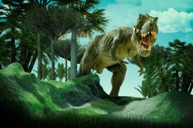

-
T-REX
Descrição
Tyrannosaurus (em português Tiranossauro)[2] é um gênero de dinossauros terópodes celurossauros que viveram durante o período Cretáceo Superior, entre 72.7 a 66 milhões de anos atrás, em toda a região que hoje é a América do Norte, no antigo continente insular de Laramidia. A espécie-tipo do gênero é Tyrannosaurus rex, que ganhou o epíteto específico de rex, por ser o maior dinossauro carnívoro conhecido quando foi descoberto.
-
Pachycephalosaurus

Descrição
Pachycephalosaurus ("lagarto de cabeça grossa", do grego pachys-/παχύς- "grosso", kephale/κεφαλή "cabeça" e sauros/σαῦρος "lagarto") foi um gênero de dinossauro ornitísquio paquicefalossaurídeo. A espécie-tipo, denominada Pachycephalosaurus wyomingensis[2][3] é a única espécie conhecida, mas alguns pesquisadores argumentam que o gênero Stygimoloch pode ser uma segunda espécie, P. spinifer ou um espécime juvenil de P. wyomingensis. Ele viveu durante a idade Maastrichtiana do período Cretáceo Superior, no que hoje é o oeste da América do Norte. Restos foram escavados em Montana, Dakota do Sul, Wyoming e Alberta. Foi descoberto no início da década de 1940 e nomeado por Barnum Brown e Erich M. Schlaikjer em 1943. É conhecido principalmente por um único crânio, além de alguns tetos cranianos extremamente grossos (com 22 cm/9” de espessura). Fósseis mais completos foram encontrados nos anos seguintes.
-
Brotossauro
Descrição
Brontosaurus (do grego "Lagarto Trovão"), o brontossauro,[1] foi um gênero de dinossauro da família Diplodocidae que ocorreu no Jurássico Superior da América do Norte, sendo reconhecidas três espécies. O Brontosaurus, táxon primo do Apatosaurus, era um saurópode robusto e com uma caixa torácica profunda e membros fortes. O pescoço não era muito flexível na posição vertical e a cabeça estaria mais orientada na direção do solo, provavelmente por se alimentar de vegetação mais rasteira. A cauda afunilava na direção da ponta e podia produzir um barulho alto, semelhante ao de um chicote.
-
Iguanodon
Descrição
No universo dos desenvolvedores, Tempestade Solar é conhecida como uma das vilãs mais formidáveis. Ela tem o poder de gerar explosões solares massivas que perturbam as redes de comunicação, afetando a internet e todos os dispositivos conectados. Esses surtos solares causam caos no mundo digital, desestabilizando servidores, interrompendo conexões e causando perda de dados críticos.
-
Pterossauro
Descrição
Os pterossauros constituem uma ordem extinta da classe Reptilia (ou Sauropsida), que corresponde aos répteis voadores do período Mesozóico. Embora sejam seus contemporâneos, estes animais não eram dinossauros.[5] O grupo surgiu no Triássico Superior e desapareceu na Extinção do Cretáceo-Paleogeno, há aproximadamente 66 milhões de anos. Os primeiros pterossauros tinham mandíbulas cheias de dentes e uma cauda longa, enquanto que as espécies do Cretáceo quase não possuíam dentes numa mandíbula que parecia um bico e a cauda estava bastante reduzida. Alguns dos melhores fósseis de pteurossauros vêm do planalto de Araripe no Brasil.
-
Espinossauro
Descrição
Espinossauro (nome científico: Spinosaurus; cujo nome significa Lagarto Espinho) foi um gênero de dinossauro espinossaurídeo que viveu durante o Cenomaniano do período Cretáceo, entre 100 e 94 milhões de anos atrás, principalmente na região que é hoje o Norte da África[2]. Este gênero foi conhecido a partir de vestígios egípcios descobertos em 1912 e descritos em 1915 pelo paleontólogo Ernst Stromer. Esses vestígios originais foram destruídos na Segunda Guerra Mundial, mas material adicional foi encontrado no início do século XXI. O S. aegyptiacus é a espécie-tipo do gênero, embora tenhamos o S. maroccanus como uma espécie em potencial. Sobre seus sinônimos, o gênero Sigilmassasaurus já foi sinonimizado por alguns autores como um S. aegyptiacus, embora outros pesquisadores proponham que seja um gênero distinto, outro possível sinônimo é o Oxalaia da Formação Alcântara no Brasil, como um sinônimo não totalmente crescido de S. aegyptiacus.[1]
-
Triceratops
Descrição
Tricerátops (nome científico: Triceratops spp.) ou tricerátopo[4] foi um gênero de dinossauro ceratopsídeo, da subfamília Chasmosaurinae. Foi um herbívoro quadrúpede que viveu no fim do período Cretáceo, durante o Maastrichtiano, principalmente na região que é hoje a América do Norte. É um dos últimos gêneros conhecidos de dinossauros não-aviários, e extinguiu-se no evento de extinção do Cretáceo-Paleogeno há 66 milhões de anos atrás.[5] O nome cientifico Triceratops, que significa literalmente "cabeça com três chifres", é derivado do grego τρί - (tri-), que significa "três", κέρας (Keras) que significa "chifre", e ὤψ (ops) que significa "cabeça"